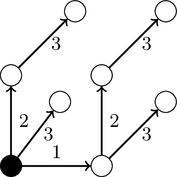

\documentclass[tikz]{standalone}
\tikzset{near start abs/.style={xshift=1cm}}
\usetikzlibrary{positioning}
\begin{document}
\begin{tikzpicture}[node distance=1.5cm]
% place nodes
\node[circle,draw=black, fill=black, inner sep=0pt,minimum size=10pt] (r) {};
\node[circle,draw=black, fill=white, inner sep=0pt,right of=r, minimum size=10pt] (r1a) {};
\node[circle,draw=black, fill=white, inner sep=0pt,above right of=r, xshift=-0.25cm, minimum size=10pt] (r2a) {};
\node[circle,draw=black, fill=white, inner sep=0pt,above of=r, minimum size=10pt] (r2t) {};
\node[circle,draw=black, fill=white, inner sep=0pt,above right of=r2t, minimum size=10pt] (r3) {};
\node[circle,draw=black, fill=white, inner sep=0pt,above of=r1a, minimum size=10pt] (r2tb) {};
\node[circle,draw=black, fill=white, inner sep=0pt,above right of=r1a, minimum size=10pt] (r2tc) {};
\node[circle,draw=black, fill=white, inner sep=0pt,above right of=r2tb, minimum size=10pt] (r3tb) {};
% Arrows, right subgraph
\draw[->,thick] (r) -- node[above] {\small{1}} ++(r1a);
\draw[->,thick] (r1a) -- node[right] {\small{3}} ++(r2tc);
\draw[->,thick] (r1a) -- node[right] {\small{2}} ++(r2tb);
\draw[->,thick] (r2tb) -- node[right] {\small{3}} ++(r3tb);
% Left subgraph
\draw[->,thick] (r) -- node[right] {\small{3}} ++(r2a);
\draw[->,thick] (r) -- node[right] {\small{2}} ++(r2t);
\draw[->,thick] (r2t) -- node[right] {\small{3}} ++(r3);
\end{tikzpicture}
\end{document}Created by David Li